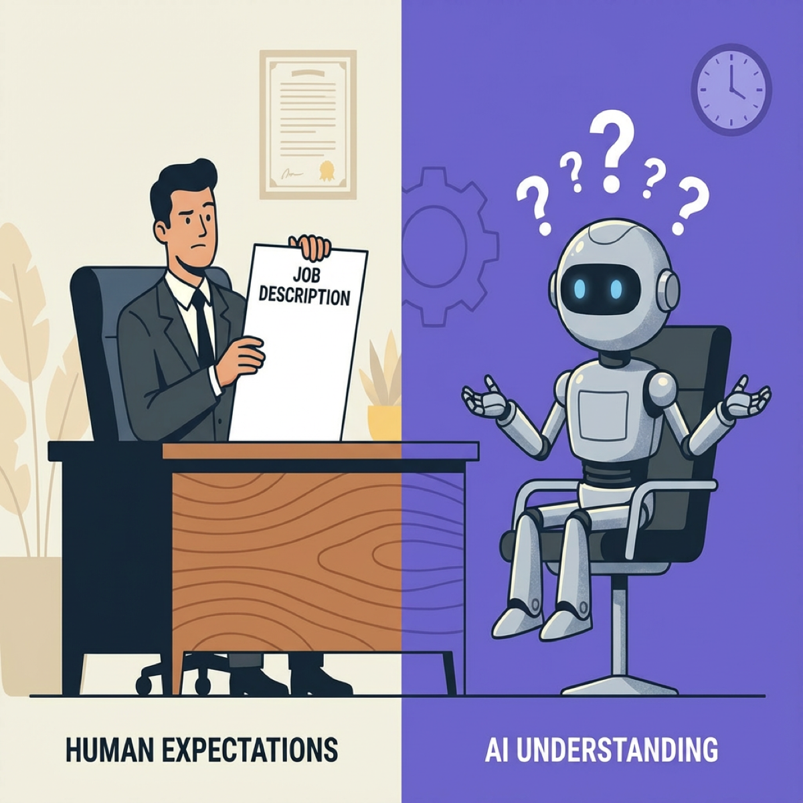

Why Your AI Needs a Job Description (And You Probably Didn’t Write One)

TL;DR
- Most AI projects fail because they lack clear specifications—not because the technology doesn’t work
- AI needs two levels of job descriptions: a Chief of Staff to orchestrate, and task workers to execute
- Single-responsibility agents with narrow specifications outperform broad “do-everything” prompts by 40%
- The time spent writing specifications isn’t overhead—it’s insurance against a 95% failure rate when requirements aren’t defined
You’d never hire a contractor without a project brief. You’d never onboard an employee without a job description. So why are too many companies deploying AI with nothing but vague prompts?
The numbers tell the story. Gartner predicts 30% of GenAI projects will be abandoned after proof-of-concept by end of 2025. IDC found that 88% of AI proof-of-concepts never reach production. The pattern is consistent: most AI initiatives stall before delivering value.
This isn’t a technology problem. It’s a specification problem.
“About 95% of AI efforts fail when there’s too little time spent defining what you want it to do and how you’ll measure it,” says Kevin Carlson of TechCXO. That statistic should terrify every executive with an AI initiative in flight.
The expensive autocomplete problem
Without clear specifications, AI becomes expensive autocomplete—technically impressive but business-irrelevant.
I’ve seen this pattern across dozens of companies. Someone demos ChatGPT or Claude to the executive team. Everyone gets excited. “Let’s use this for customer service!” or “What if we automated our reports?” Six months later, the pilot is quietly shelved.
The technology worked fine. What failed was the translation from “wouldn’t it be cool if” to “here’s exactly what we need it to do.”
Generic AI tools like ChatGPT excel for individuals because of their flexibility. But they stall in enterprise settings because—as MIT’s NANDA initiative found—they don’t learn from or adapt to workflows. Enterprise problems require enterprise-grade specifications.
If your AI doesn’t have a written job description, you’re not doing AI—you’re doing expensive autocomplete.
— Clarke Bishop
Why vague prompts fail
Research confirms what experience suggests: vague prompts produce vague results.
Studies show that multi-prompt strategies—breaking complex tasks into smaller, focused prompts—improve task effectiveness by up to 40% compared to single-prompt approaches. Meanwhile, single-prompt overextension leads to a 30% increase in output variance.
Anthropic’s engineering team puts it this way: “Find the smallest possible set of high-signal tokens that maximize the likelihood of some desired outcome.” In plain English: be specific. Be precise. Every word matters.
The “just ask ChatGPT” approach works for individuals drafting emails or summarizing documents. It fails for enterprises because enterprise problems are too complex for a single prompt to handle reliably.
AI work is task-based, not job-based
Here’s a critical insight most executives miss: AI doesn’t replace jobs—it handles tasks.
Stanford’s WORKBank study, combined with Anthropic’s Claude Economic Index analysis of 4.1 million AI conversations, found that fewer than 4% of occupations are close to full automation. But 46% of individual tasks that employees perform could be automated—particularly the repetitive stuff like data entry, reporting, and basic analysis.
Workers don’t want their jobs replaced. They want the boring parts automated. 45% prefer an “equal partnership” model where AI handles the tedious work while humans focus on judgment, creativity, and relationships.
The implication for AI specifications is profound. Don’t write AI a job description for a whole role. Write task specifications for specific, bounded work. The difference is everything.
Two levels of AI job descriptions
Here’s where most AI implementations go wrong: they think of AI as a single employee. It’s not. Effective AI systems often have two levels—and each needs its own job description.
Level 1: The Chief of Staff
The Chief of Staff agent orchestrates the work. It understands the overall goal, breaks it down into tasks, assigns those tasks to specialists, and ensures the pieces come together coherently.
Anthropic’s Claude Code architecture demonstrates this pattern. An initializer agent sets up the environment and context. It maintains a progress file that enables each new session to quickly understand state. It decides which specialist agents to deploy for which tasks.
The Chief of Staff job description includes:
- Scope: Coordinate multi-step workflows, not execute individual tasks
- Inputs: High-level goals, context about the business situation, available resources
- Outputs: Task assignments, progress tracking, quality checks, final synthesis
- Success criteria: Overall workflow completed correctly, not individual task metrics
Level 2: The Task Workers
Task workers are single-responsibility agents, each with one clear goal and a narrow scope.
UiPath’s research is unambiguous: “Start with single-responsibility agents, each with one clear goal and narrow scope. Broad prompts decrease accuracy; narrow scopes ensure consistent performance.”
Each task worker needs its own specification:
- Task scope: One bounded task (classify tickets, extract data, generate summaries)
- Inputs: Specific data in specific formats
- Outputs: Specific deliverable with clear quality criteria
- Success criteria: Measurable metrics for that task alone
The magic happens when these two levels work together. Complexity lives in orchestration, not in individual agents. Your AI strategy should look like a well-designed microservices architecture, not a monolithic application.
Don’t build one AI to do everything. Build multiple AIs with narrow specifications. Let the Chief of Staff handle the complexity.
— Clarke Bishop
What an AI job description contains
Whether you’re writing for a Chief of Staff or a task worker, effective AI specifications have four components—the same components any good job description has.
The AI Task Specification Framework
1. Task Scope — What specific task is this AI handling? Not a role, not a department—a bounded task with clear start and end points.
2. Inputs — What information does the AI receive? Data sources, formats, context, constraints.
3. Outputs — What deliverable does the AI produce? Format, quality criteria, where it hands off to the next step.
4. Success Criteria — How do you verify the task is done correctly? Metrics, tests, human review triggers.
Good vs. bad specifications
Here’s the difference in practice:
Bad: “Use AI to improve customer service.”
Good: “Classify incoming support tickets into 5 categories (billing, technical, shipping, returns, other) with 95% accuracy. Route each ticket to the appropriate team within 30 seconds. Flag any ticket mentioning legal action or regulatory complaints for immediate human review.”
The good specification is testable. You can measure whether it’s working. You can improve it systematically. The bad specification is a wish, not a job description.
The specification tax
OBJECTION: “Writing detailed specifications slows us down. We need to move fast.”
I hear this constantly. And it’s exactly backwards.
Yes, writing specifications takes time. That’s the point. The “specification tax” prevents the 95% failure rate that happens when teams skip the requirements work.
Consider the math. As Kevin Carlson of TechCXO notes, 95% of AI efforts fail when teams don’t spend enough time defining requirements and success metrics. The companies that succeed are the ones that treat specification as the work, not a delay before the work.
Failed pilots aren’t free. They cost money, time, credibility, and organizational patience for AI initiatives. A pilot that fails after six months of development is slower than spending two weeks writing specifications upfront.
The time spent writing AI specifications is not overhead. It’s the work. Skip it and you’re not saving time—you’re guaranteeing wasted time.
Getting started
Before your next AI initiative, write the job descriptions first.
Start with the task workers. Identify the specific, bounded tasks you want to automate. For each one, document the inputs, outputs, and success criteria. Make them measurable. Make them testable.
Then design the Chief of Staff. How will the workflow be orchestrated? What context does the coordinator need? How will it handle exceptions, errors, or edge cases?
If you can’t write it clearly, AI can’t execute it reliably.
The companies succeeding with AI aren’t using better models or bigger budgets. They’re writing better job descriptions—task specifications that give AI the same clarity you’d give a new hire.
Stop asking “How do we use AI?” Start asking “What job descriptions would make AI successful?”
Takeaways
- Most AI projects fail due to missing specifications, not bad technology
- AI systems need two levels of job descriptions: Chief of Staff (orchestration) and Task Workers (execution)
- Single-responsibility agents with narrow scopes outperform broad “do-everything” approaches
- Every AI task specification needs: scope, inputs, outputs, and success criteria
- The specification tax is insurance—skip it and you join the 95% who fail without clear requirements
Planning an AI initiative? If you want help writing AI job descriptions that actually work, that’s exactly the kind of strategic work I do as a fractional CTO. Let’s talk.